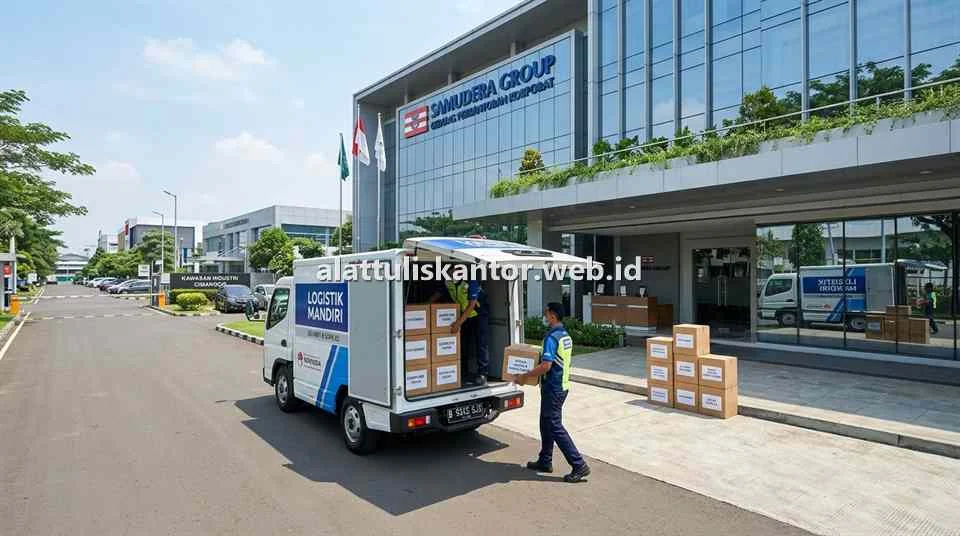

Bagi tim Procurement, Purchasing, dan General Affair (GA) yang mengelola operasional pabrik manufaktur di wilayah Jabodetabek (Jakarta, Bogor, Depok, Tangerang, Bekasi) hingga Karawang, efisiensi rantai pasok ATK bukan sekadar urusan membeli bolpoin atau kertas. Keterlambatan pasokan barang habis pakai (*consumables*) seperti label barcode, lakban packing, kertas form continuous, atau ordner dokumen ekspor dapat mengganggu kelancaran administrasi lini produksi dan pengiriman kontainer.
Memilih distributor alat tulis kantor terdekat yang memiliki gudang penyangga (*hub logistik*) strategis dan komitmen Service Level Agreement (SLA) yang mengikat adalah solusi mutlak untuk memangkas *lead time*, meniadakan *downtime*, dan menghapus beban ongkos kirim yang membengkak.
1. Tantangan Pengadaan ATK di Klaster Kawasan Industri
Kawasan industri terpadu seperti MM2100 Cikarang Barat, Jababeka I–VII, GIIC Deltamas, KIIC Karawang Barat, Surya Cipta Karawang Timur, Millenium Tigaraksa, hingga Modern Cikande Serang memiliki karakteristik operasional yang khas:
- Akses Masuk Ketat: Truk pengiriman harus mematuhi standar Keselamatan dan Kesehatan Kerja (K3), menggunakan APD (rompi, helm, sepatu safety), serta memiliki izin bongkar muat (*security gate pass*).
- Jarak dari Pusat Kota: Membeli ATK secara eceran ke toko kota memakan waktu berjam-jam akibat kemacetan tol Jakarta-Cikampek atau tol Jakarta-Merak, belum lagi biaya bahan bakar dan uang saku kurir internal.
- Volume & Bobot Besar: Pembelian rutin bulanan pabrik umumnya berkisar antara 20 hingga 200 kardus kertas HVS beserta perlengkapan logistik, yang memerlukan armada mobil boks (Blind Van / Engkel Box).
Kunci Efisiensi: Memilih distributor ATK dengan sistem pengiriman terpusat yang menjadwalkan rute harian (*milk run*) ke kawasan industri dapat menghemat hingga 15%–25% total biaya pengadaan tahunan Anda.
2. Standar Service Level Agreement (SLA) Pengiriman B2B
Dalam kontrak pengadaan korporat (*Corporate Supply Agreement*), SLA pengiriman wajib dibagi ke dalam 2 tingkatan layanan:
- Next-Day Delivery (H+1) — Pesanan Rutin: PO yang diterbitkan sebelum pukul 15.00 WIB dikirim dan tiba di dermaga penerimaan (*receiving bay*) pabrik pada keesokan harinya pukul 09.00 – 14.00 WIB.
- Same-Day Delivery (3–6 Jam) — Kebutuhan Darurat (Emergency Stock): Layanan pengiriman kilat untuk item kritis lini produksi seperti lakban OPP packing, kertas label, atau tinta cetak stempel QC yang mendadak habis.
3. Optimasi Biaya Ongkir: Skema Gratis Ongkir Armada Distributor
Mengandalkan jasa kurir instan retail pihak ketiga untuk pengiriman puluhan kardus kertas HVS akan membebankan ongkir ratusan ribu rupiah per transaksi. Distributor ATK resmi B2B mengatasi masalah ini dengan menyediakan fasilitas gratis ongkir (*Free Delivery*) melalui armada mobil boks milik sendiri.
Kriteria gratis ongkir umumnya disesuaikan dengan nilai minimum pemesanan (*Minimum Order Value*):
- Jabodetabek Ring 1 (Jakarta, Bekasi Kota, Tangerang Kota): Gratis ongkir dengan minimum PO Rp 1.000.000.
- Jabodetabek Ring 2 (Cikarang, Karawang, Cikande, Bogor): Gratis ongkir dengan minimum PO Rp 2.000.000 – Rp 2.500.000.
4. Legalitas PKP, e-Faktur Pajak, dan Pembayaran Tempo (TOP)
Perusahaan berskala menengah dan multinasional (PMA) tidak dapat bertransaksi dengan toko ATK informal tanpa legalitas. Distributor ATK B2B terpercaya wajib memenuhi parameter kepatuhan fiskal:
- Pengusaha Kena Pajak (PKP): Mampu menerbitkan e-Faktur PPN 11% dan bukti potong PPh 22/23 sesuai regulasi perpajakan yang berlaku.
- Terms of Payment (TOP 30 – 60 Hari): Pembayaran ditagihkan secara konsolidasi per bulan menggunakan sistem invoice resmi tanpa ribet administrasi nota (Surat Jalan Asli bertanda tangan security/GA, Kwitansi Bermaterai, dan Salinan PO).
5. SOP Konsolidasi Pesanan Lintas Departemen Pabrik
Untuk memaksimalkan efisiensi ongkos kirim dan diskon volume pabrik, tim GA disarankan menerapkan siklus pengadaan terpusat:
- Koleksi Kebutuhan (Tanggal 1–5): Bagian GA merekap form permintaan ATK dari divisi HRD, Finance, Gudang, Engineering, dan QC.
- Penerbitan PO Tunggal (Tanggal 7): Purchasing menerbitkan 1 nomor Purchase Order (PO) konsolidasi ke distributor resmi.
- Pengiriman Terjadwal (Tanggal 10): Armada distributor mengirim seluruh barang sekaligus dengan sistem *pre-sorting* per label departemen pemesan.
6. Tabel Benchmark SLA Pengiriman per Kawasan Industri
| Kawasan Industri | Radius Logistik | Estimasi Lead Time | Fasilitas Pengiriman |
|---|---|---|---|
| MM2100 & Jababeka (Cikarang) | Hub Bekasi / Cikarang | Same Day / H+1 Pagi | Free Delivery Boks |
| KIIC & Surya Cipta (Karawang) | Hub Karawang Barat | H+1 Terjadwal | Free Delivery Boks |
| Modern Cikande & Millenium (Tangerang/Serang) | Hub Tangerang Barat | H+1 s/d H+2 | Free Delivery Boks |
| Pulogadung & Sunter (DKI Jakarta) | Hub Jakarta Pusat/Timur | Same Day (3–5 Jam) | Free Delivery Boks |
7. Katalog Perlengkapan Khusus Pabrik & Logistik Manufaktur
Kebutuhan ATK pada fasilitas manufaktur tidak terbatas pada alat tulis kantor biasa, melainkan mencakup berbagai barang habis pakai (*industrial consumables*) penunjang rantai produksi dan kearsipan operasional:
- Kertas Continuous Form (NCR Multi-ply): Kertas rangkap 2-ply hingga 4-ply berlubang samping (*pinfeed*) untuk cetak Surat Jalan, Delivery Order (DO), dan Faktur Penjualan via printer dot-matrix.
- Label Barcode Thermal & Semicoat: Kertas stiker gulungan (*roll label*) untuk penandaan nomor batch, barcode palet gudang, dan label instruksi QC produk.
- Lakban OPP & Stretch Film Palet: Lakban cokelat/bening heavy-duty daya rekat tinggi (48mm x 90 yard) serta plastik *stretch film* elastis untuk pembungkus palet kontainer ekspor.
- Ordner Box File Kearsipan Mutu (ISO): Map ordner F4 tebal berlapis pelindung debu untuk pengarsipan lembar inspeksi Quality Control (QC), lembar kerja SOP produksi, dan dokumen audit ISO 9001.
8. Simulasi Penghematan Biaya: Retail vs Kontrak B2B
Untuk memahami dampak nyata pemilihan distributor terdekat, berikut simulasi perbandingan biaya operasional pengadaan bulanan pada pabrik manufaktur dengan 500 karyawan di Kawasan Industri Cikarang:
| Komponen Pengadaan | Pembelian Retail Sporadis | Kontrak Distributor B2B | Efisiensi / Penghematan |
|---|---|---|---|
| Kertas HVS (100 Rim) | Rp 5.500.000 (Rp 55.000/rim) | Rp 4.700.000 (Rp 47.000/rim) | Hemat Rp 800.000 (14,5%) |
| Lakban OPP & Packaging | Rp 3.800.000 | Rp 2.950.000 | Hemat Rp 850.000 (22,4%) |
| Biaya Pengiriman / Kurir | Rp 1.200.000 (6x kirim instan) | Rp 0 (Free Delivery Armada) | Hemat Rp 1.200.000 (100%) |
| Total Biaya Bulanan | Rp 10.500.000 | Rp 7.650.000 | Total Hemat Rp 2.850.000 / bln |
9. Fasilitas Buffer Stock & Emergency Replacement 1x24 Jam
Bagi lini produksi yang beroperasi selama 24 jam nonstop dalam 3 shift kerja, kehabisan stok lakban atau kertas form faktur di tengah malam dapat memicu penundaan muat truk tronton (*delivery bottleneck*). Distributor ATK B2B terpercaya menyediakan mitigasi risiko komprehensif:
- Fasilitas Stock Consignment / Buffer: Distributor menitipkan stok darurat penyangga (*safety stock*) di lemari inventaris GA pabrik yang dapat langsung dipakai saat kebutuhan mendesak muncul, lalu ditagihkan pada siklus invoice bulanan berikutnya.
- Garansi Retur 1x24 Jam: Setiap barang yang mengalami cacat produksi, lakban getas, atau salah tipe langsung ditukar unit baru dalam waktu 24 jam kerja tanpa prosedur birokrasi berbelit.
- Dedicated Account Executive (AE): Jalur komunikasi langsung satu pintu (*single point of contact*) via WhatsApp khusus korporat untuk memproses PO darurat tanpa antrean.
10. Checklist 5 Kriteria Memilih Distributor ATK Resmi
Sebelum menandatangani perjanjian pengadaan jangka panjang (PKS), pastikan calon vendor ATK Anda lolos kriteria memilih vendor ATK terpercaya berikut:
- Kepemilikan Gudang & Stok Fisik Nyata: Vendor bukan makelar/dropshipper, melainkan memiliki fasilitas gudang representatif dengan stok kertas dan ATK yang selalu siap dikirim.
- Armada Logistik Sendiri: Memiliki kendaraan operasional boks roda 4 terlindung hujan dan panas untuk menjaga kualitas kertas HVS.
- Fleksibilitas Garansi Retur: Barang rusak, cacat cetak, atau salah spesifikasi diganti baru maksimal 1x24 jam tanpa biaya tambahan.
- Katalog Produk Terintegrasi: Menyediakan pilihan lengkap mulai dari alat tulis harian, kertas continuous, map arsip ordner, hingga perlengkapan packaging gudang.
- Dedicated Account Manager: Memiliki tim customer service khusus korporat yang siap merespons kebutuhan mendesak via WhatsApp atau telepon dalam hitungan menit.
- Kemudahan Pemesanan Multi-Channel: Mendukung integrasi sistem purchase order digital melalui portal e-procurement B2B, email resmi perusahaan, dan notifikasi pelacakan pengiriman kurir armada (*live tracking*).
11. Panduan Site Visit & Audit Fasilitas Gudang Distributor
Bagi tim Procurement pabrik manufaktur skala menengah hingga besar, melakukan inspeksi langsung (*on-site audit*) ke lokasi fasilitas distributor calon rekanan adalah langkah mitigasi risiko yang sangat dianjurkan terutama untuk pengadaan berstandar TKDN resmi:
- Verifikasi Kapasitas Ruang Simpan: Pastikan gudang distributor memiliki kapasitas buffer stock kertas minimal 5.000 hingga 10.000 rim untuk menjamin pasokan tidak terputus saat terjadi kelangkaan pulp di tingkat pabrik kertas nasional.
- Kondisi Fasilitas Gudang Kertas: Periksa apakah lantai gudang dilengkapi palet berstandar dan sistem ventilasi sirkulasi udara yang baik untuk mencegah kelembaban merusak produk kertas sebelum dikirim.
- Kesiapan Armada Distribusi: Pastikan distributor memiliki armada kendaraan operasional boks tertutup dalam jumlah memadai agar jadwal pengiriman (*delivery timetable*) ke pabrik Anda selalu tepat waktu.
Langkah audit fasilitas fisik ini memberikan kepastian hukum, transparansi operasional, serta jaminan keandalan rantai pasok sebelum penandatanganan kontrak tahunan bersama distributor resmi.
12. Sistem Kartu Kendali Konsumsi ATK untuk Mencegah Pemborosan
Efisiensi biaya pengadaan di kawasan industri tidak hanya ditentukan oleh harga beli dari vendor, tetapi juga oleh tata kelola pemakaian internal pabrik. Terapkan 3 langkah kontrol inventaris berikut:
- Batas Kuota Bulanan per Departemen (*Budget Quota*): Tetapkan pagu kuota pemakaian kertas dan alat tulis untuk masing-masing divisi (Produksi, QA, HRD, Purchasing) berdasarkan jumlah staf dan intensitas administrasi.
- Pencatatan Kartu Pengambilan Barang: Setiap staf yang mengambil perlengkapan dari lemari GA wajib menandatangani lembar pengambilan barang (*material requisition slip*) sebagai bukti audit internal.
- Laporan Rekonsiliasi Bulanan: GA mencocokkan total realisasi invoice distributor dengan total fisik barang yang dikeluarkan dari lemari penyimpanan untuk mendeteksi potensi kebocoran stok secara dini.